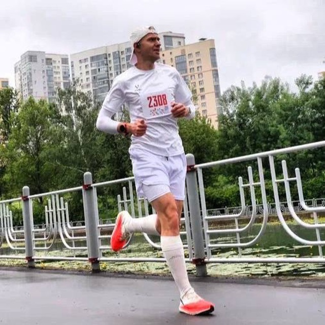

Вместе — быстрее
Бег в группе держит ритм и превращает тренировки в привычку, а не в подвиг силы воли.
Беговой клуб · Москва
«ВЖУХ» — клуб для любителей бега. Готовим к первым в жизни стартам и марафонам, ставим технику и объясняем, как бегать долго и без травм.

О клубе
Бег в группе держит ритм и превращает тренировки в привычку, а не в подвиг силы воли.
Сначала учим бежать экономично и без травм, потом спокойно прибавляем километры.
Темп, пульс и дистанции отслеживаем — прогресс виден по цифрам, а не по ощущениям.
От «ни разу не бегал(а)» до марафона — для каждого уровня и возраста своя нагрузка.
Тренер
Основатель и тренер клуба «ВЖУХ». Работает с любителями любого уровня и возраста — от тех, кто ни разу не бегал, до тех, кто готовится к своему очередному марафону.
Тренировки
Регулярные занятия в командах по уровню: интервалы, темповый и длинный бег.
Персональный план и работа один на один — под вашу цель и ваш график.
Разбор и постановка бегущего шага: экономичность, каденс, работа стоп и корпуса.
План подготовки к любым дистанциям — от первого забега до марафона.
Расписание
Неделя 28 сентября — 4 октября. Нажмите на тренировку — откроется описание.
Понедельник · 28 сентября
Вторник · 29 сентября
Среда · 30 сентября
Четверг · 1 октября
Пятница · 2 октября
Суббота · 3 октября
Воскресенье
Названия тренировок — фирменные названия клуба. Точные даты и детали уточняйте в группе клуба: дата «Длительной» в источнике не указана (по порядку недели — воскресенье).
Отзывы
Пока нет отзывов — будьте первым.
Вопросы
Да — это наш самый частый сценарий. Начнём с ходьбы и коротких лёгких отрезков и постепенно доведём до комфортных тренировок.
При правильной технике и адекватной нагрузке — нет. Именно поэтому мы сначала ставим технику, а потом наращиваем объёмы.
Кроссовки для бега, спортивную одежду по погоде и воду. Остальное подскажет тренер на первом занятии.
На первых занятиях посчитаем ваши рабочие зоны по возрасту и тесту, дальше тренер подскажет, как их использовать в тренировках.
Да, к любым: от первого забега на 1–3 км до полумарафона и марафона — с планом доведения прямо до дня старта.
Контакты
Напишите в чат клуба — подскажем расписание и подберём группу под ваш уровень. Все новости и тренировки клуба публикуются в этих каналах: